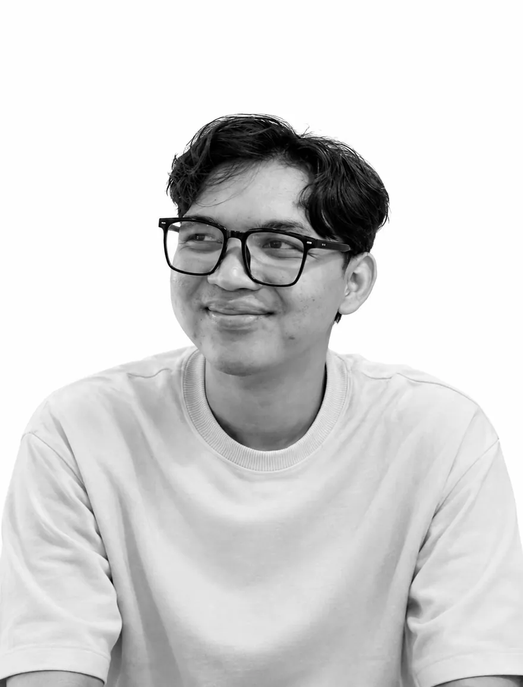

Devaldi Caliesta Octadiani, Full Stack Developer & AI-Driven Engineer

Hi, I'm Dev.Halo, saya Dev.
Full Stack Developer
& AI-Driven Engineer.
Currently atSaat ini di
PT Clipan Finance Indonesia Tbk
Full Stack Developer · since Jun 2026sejak Juni 2026
Based in West Jakarta, Indonesia.Berbasis di Jakarta Barat, Indonesia.
I build reliable business systems, indoor navigation platforms, edge AI platforms and real-time web apps, from the database to deployment.
Saya membangun sistem bisnis yang andal, platform navigasi dalam gedung, platform AI di edge, dan aplikasi web real-time, dari database sampai deployment.
Claude Code is part of how I engineer: spec first, small test-first tasks, automated reviews, and RAG pipelines with Gemini and vector databases.
Claude Code adalah bagian dari cara saya bekerja: spesifikasi dulu, tugas kecil yang diuji lebih dulu, review otomatis, serta pipeline RAG dengan Gemini dan vector database.
Explore projectsLihat proyek// what i build// yang saya bangun
What I buildYang saya bangun
Business systems, indoor navigation, financial platforms, RAG chatbots, real-time games, and automations.
Sistem bisnis, navigasi indoor, platform finansial, chatbot RAG, game real-time, dan otomasi.
Claude CodeTypeScriptC# · .NETCloudflare EdgeMapLibre GLRAG SystemsPostgreSQLReact 19Durable Objects
Tech StackTeknologi
The tools behind my work.Alat di balik pekerjaan saya.
AI & LLM EngineeringRekayasa AI & LLM
RAG pipelines, hybrid search and prompt security.Pipeline RAG, pencarian hibrida, dan keamanan prompt.
- Claude Code
- RAG
- Gemini API
- Hybrid Search
- BM25 + Vectorize
- Semantic Caching
- Workers AI
- Rerankers
- Prompt Guards
- PII Masking
- Spec-driven
Languages & FrameworksBahasa & Framework
Back-office, edge, spatial and real-time apps.Aplikasi back-office, edge, spasial, dan real-time.
- TypeScript
- C# / .NET
- ASP.NET Core
- Blazor
- React 19
- Preact
- Hono
- Node.js
- Three.js
- MapLibre GL
- GeoJSON
- Tailwind CSS
- Web Components
- EF Core
Data, Cloud & DeliveryData, Cloud & Rilis
Storage, edge infrastructure, testing and CI/CD.Penyimpanan, infrastruktur edge, testing, dan CI/CD.
- PostgreSQL
- Cloudflare Workers
- SQL Server
- Redis
- Durable Objects
- D1 + FTS5
- Playwright
- Vitest
- GitHub Actions
- Turborepo
- YARP
- IIS
- Linux
- Jira
- Azure DevOps
Featured ProjectsProyek Pilihan
Own products, freelance work and enterprise platforms. Open a folder to read the case study.Produk sendiri, proyek freelance, dan platform enterprise. Buka folder untuk membaca studi kasusnya.
08 case studies08 studi kasus
Own projects & freelanceProyek pribadi & freelance
-
Own projectProyek pribadi · panduarah.my.id ↗
-
Own projectProyek pribadi · Visit ↗Kunjungi ↗
-
Own projectProyek pribadi · Play ↗Main ↗
-
Freelance · Puri Indah CBD
Enterprise platformsPlatform enterprise
-
Enterprise · ASP.NET Core
-
Enterprise · ETL Cron
-
Enterprise · Blazor
-
Enterprise · CodeIgniter 4
Experience.Pengalaman.
From the foundations to current work.Dari fondasi sampai pekerjaan sekarang.
-
EducationPendidikan
2019 – 2023
Bachelor of Information Systems (S.Kom)Sarjana Sistem Informasi (S.Kom)
Ahmad Dahlan UniversityUniversitas Ahmad Dahlan
GPAIPK 3.79 / 4.00 · Cum Laude
GDSC core member and head lab assistant; published a thesis on data classification and web intelligence.
Anggota inti GDSC dan kepala asisten laboratorium; menerbitkan skripsi tentang klasifikasi data dan web intelligence.
-
InternshipMagang
Feb 2022 – Jul 2022
Internship Full Stack DeveloperMagang Full Stack Developer
CV Lumintu Logic
Built parts of a Learning Management System: front-end UI/UX, relational database design, SQL queries and a payment gateway module.
Mengembangkan bagian Learning Management System: UI/UX front-end, desain database relasional, query SQL, dan modul payment gateway.
-
CampusKampus
Mar 2022 – Jul 2023Mar 2022 – Jul 2023
Laboratory AssistantAsisten Laboratorium
Information Systems Laboratory UAD
Supported programming, algorithms and data mining practicums; prepared materials, mentored students and reviewed their software work.
Mendukung praktikum pemrograman, algoritma, dan data mining; menyiapkan materi, membimbing peserta, dan meninjau karya perangkat lunak mereka.
-
Full-timePenuh waktu
May 2024 – 2026Mei 2024 – 2026
Full Stack Developer
PT Dinamis Infomadya
Enterprise back-office systems, financial modules, high-volume reporting engines, cron-based ETL and API integrations: Asset Management, Fixed Income and Branch Information System.
Sistem back-office enterprise, modul finansial, reporting engine skala besar, ETL berbasis cron, dan integrasi API: Asset Management, Fixed Income, dan Branch Information System.
-
CurrentSaat ini
Jun 2026 – PresentJuni 2026 – Sekarang
Full Stack Developer
PT Clipan Finance Indonesia Tbk
Front end of a Multipurpose Ticketing system: wiring it to back-end APIs, fixing bugs and documenting features in a Scrum team (Jira, Azure).
Front-end sistem Multipurpose Ticketing: menghubungkannya ke API back-end, memperbaiki bug, dan mendokumentasikan fitur dalam tim Scrum (Jira, Azure).
Let's talk.Mari bicara.
Have a system to build, a workflow to automate, or an idea worth discussing? Email is the fastest way to reach me.
Punya sistem untuk dibangun, alur kerja untuk diotomasi, atau ide yang layak didiskusikan? Email adalah cara tercepat untuk menghubungi saya.